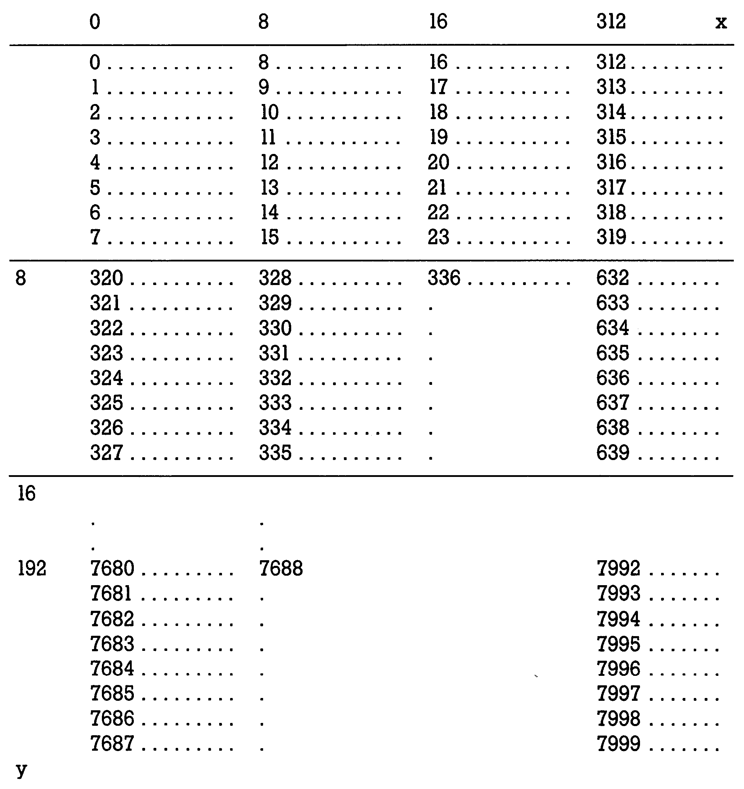
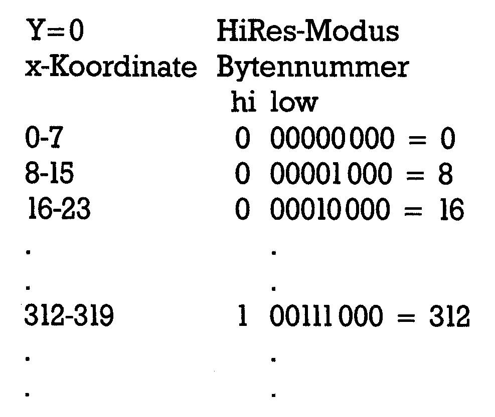
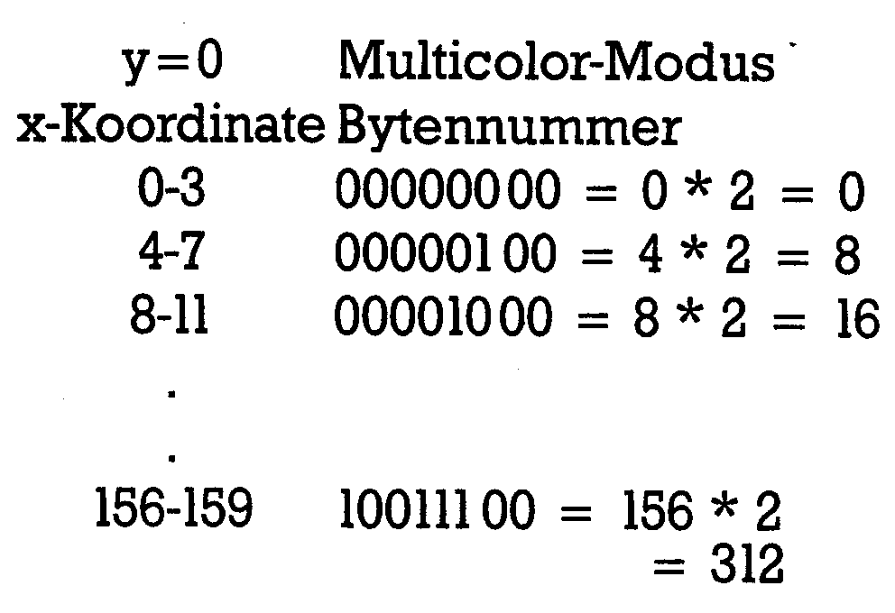

Grafik für Profis
Allen Grafikbegeisterten soll dieser Kurs Tips und Programmierkniffe zum Thema hochauflösende Grafik vermitteln. Wir zeigen Ihnen leistungsstarke Grafik-Routinen mit sehr schnellen Befehlen. Außerdem bekommen Sie ein Programm für 3-D-Grafik.
Wohl jeder Assembler-Alchimist, der gerade das kleine ABC der Maschinensprache kennengelernt hat, wird bei dem Versuch, ein einfaches Basic-Programm in Assembler zu übersetzen, auf nahezu unüberwindliche Schwierigkeiten gestoßen sein. Erfordert doch schon die Multiplikation zweier 16-Bit-Zahlen ein kompliziertes Unterprogramm, so wird der Aufwand bei dem Versuch, den Sinus oder den Logarithmus aus einer Fließkommazahl zu berechnen, geradezu gigantisch. Vorausgesetzt, man will alle erforderlichen Unterprogramme selber schreiben. Glücklicherweise sind die benötigten Routinen jedoch schon im Basic-ROM des C 64 vorhanden. Woran liegt es aber, daß man auf solche Schwierigkeiten stößt, wenn man einen Algorithmus, der sich in Basic relativ einfach bewältigen läßt, in Assembler formulieren will? Nun, die Antwort liegt darin begründet, daß Basic eine sogenannte »höhere« Programmiersprache ist. Die Befehle, die Sie im Wortschatz der Sprache Basic finden, werden Sie im Wortschatz des 6510-Prozessors vergeblich suchen. Das liegt daran, daß jeder einzelne Basic-Befehl sich aus vielen Maschinenbefehlen zusammensetzt. Jedes dieser Maschinenprogramme simuliert praktisch einen Basic-Befehl. Sie werden fragen, was dies alles mit diesem Kurs zu tun hat. Wie Sie der Überschrift entnehmen können, geht es um die Programmierung von hochauflösender Grafik. Auch hier geht es darum, mit Hilfe des 6510-Wortschatzes kompliziertere Befehle aufzubauen, die dazu dienen, Punkte zu zeichnen, Linien zu ziehen etc.
Die meisten dieser Befehle enthalten bestimmte Rechenalgorithmen, die dazu dienen, die Koordinaten eines zu zeichnenden Punktes zu bestimmen. Eine gute Voraussetzung für diesen Grafikkurs sind die beiden Kurse »Reise durch die Wunderwelt der Grafik« und »Assembler ist keine Alchimie« von H. Ponnath. Wenn Sie diese beiden Kurse aufmerksam verfolgt haben, dann sind Sie mit den Grafikfähigkeiten des C 64 vertraut. Mit einigen der dort erworbenen Assemblerkenntnissen dürften Sie wohl in der Lage sein, die zum Zeichnen in der Hi-Res-Grafik wichtigen Befehle selbst in Maschinensprache zu formulieren.
Ein Ergebnis eines solchen Versuchs könnte etwa das Programm »HiRes-3« von H. Ponnath sein. Wenn Sie sich aber eine zeitlang intensiv mit diesem Programm beschäftigt haben, werden Sie merken, daß die Zeichengeschwindigkeit der meisten Befehle noch Wünsche offen läßt. Der Grund hierfür liegt nicht etwa darin, daß das Programm schlecht programmiert wurde, sondern das Problem liegt in der Berechnung der Algorithmen. Das betrifft besonders die Befehle, die mit der herkömmlichen 16-Bit-Arithmetik scheinbar nicht mehr zu bewältigen sind (Circle-Befehl). Gerade hierin aber zeigt sich die wahre Programmierkunst. Nämlich die Fähigkeit, mit einigen Programmierkniffen und mit etwas Fantasie das scheinbar Unmögliche doch noch möglich zu machen. Ich möchte versuchen, Ihnen in diesem Kurs einige dieser »Tricks« zu vermitteln. Dazu eignet sich meiner Änsicht nach nichts besser als das reizvolle Thema »Hochauflösende Grafik«. Dazu bekommen Sie nebenbei auch noch ein professionelles Grafikprogramm, mit dem es sich hervorragend arbeiten läßt. Ich möchte Ihnen nun dieses Programm, das der Hauptgegenstand dieses Kurses sein wird, etwas genauer vorstellen. »Profi-Grafik 64«, so der Name des Programms, besteht aus vielerlei Grafikroutinen, die der besseren Handhabung wegen zu einer Basic-Erweiterung zusammengefaßt wurden. Profi-Grafik 64 hat einige hervorstechende Merkmale:
- Es stehen zwei Grafikseiten zur Verfügung
- Die Befehle fallen durch ihre Leistungsstärke, Schnelligkeit und leichte Handhabung auf
- Multicolor-Grafik wurde ohne Einschränkungen verwirklicht
- Es können gleichzeitig acht Sprites interruptgesteuert über den Bildschirm bewegt werden
- Durch einfache Befehle wird 3-D-Grafik möglich
Nachdem ich Ihnen hoffentlich ein wenig den Mund wässrig gemacht habe, wollen wir nun mit der Besprechung des Programms beginnen.
In dieser Folge finden Sie ein ziemlich langes Assemblerprogramm (Listing 1) sowie ein MSE-Listing (Listing 2). Dieses Listing bildet den Grundstock für eine Basic-Erweiterung und hat eigentlich nichts mit den Grafikroutinen zu tun. Deshalb tippen Sie dieses Listing am besten erst mal ab und speichern es.
Schauen Sie sich nun einmal das Assemblerlisting an. Sie finden dort die Routinen der ersten neun Befehle von Profi-Grafik 64. Ihre Aufgabe ist es vor allem, die hochauflösende Grafik einzuschalten und die Parameter für andere Zwischenbefehle zu setzen. Die Befehle, die sich auf die Hardware beziehen, möchte ich so kurz wie möglich behandeln, weil deren Theorie schon ausführlich im Grafikkurs von H. Ponnath behandelt wurde.
1. SCREEN nr.
Da wäre als erstes der SCREEN-Befehl.
Durch ihn bestimmt man die Nummer des Bildschirms, den man anwählen will. Der Parameter »nr.« kann 0 oder 1 sein. Die Bitmap von Screen0 nimmt den Bereich von $A000-$BFFF ein und das Video-RAM den Bereich von $8C00-$8FFF.
Bei Screenl sind dies die Bereiche $E000-$FFFF für die Bitmap und $CC00-$CFFF für das Video-RAM.
Übrigens wird im Register »Scrnum« nicht die Nummer selbst abgelegt, wie man denken könnte, sondern das High-Byte der Bitmap-Anfangsadresse.
Dies ist deshalb möglich, weil die Bytes $AO und $EO bei einer Bit-Abfrage die Flags unterschiedlich beeinflussen. Dies wird beispielsweise beim HiRes-Befehl ausgenutzt.
2. HIRES
Der Befehl dient nur dazu, den Bildschirm, der mit SCREEN festgelegt wurde, einzuschalten. Das Zustandekommen der einzelnen Werte, mit denen die VIC-Register versorgt werden, soll in der nächsten Folge dieses Kurses beschrieben werden. Ganz Ungeduldige können im H. Ponnaths Grafikkurs, Ausgabe 7/84 nachschauen.
3. MULTI
Schaltet den Multicolormodus ein. Ansonsten wie HIRES.
4. TEXT
Stellt die ursprünglichen Werte in den VIC-Registern wieder her, schaltet also auf den Textbildschirm zurück. Dieser Befehl wird auch bei jedem Warmstart (Programmende) und bei einem Druck auf die RUN/STOP-Taste ausgeführt. Man kann die Grafikbefehle also nur im Programm-Modus verwenden. Der Vorteil dabei ist, daß bei einer Fehlermeldung automatisch in den Text-Modus geschaltet wird.
5. CLEAR
Dieser Befehl löscht die Bitmap des mit SCREEN angewählten Bildschirms.
6. HICOL zf,hf(,c3)
Der Befehl HICOL setzt die Farben im Video-RAM des mit SCREEN angewählten Bildschirms. Im HiRes-Modus brauchen nur die Parameter »zf« und »hf« für Zeichenfarbe und Hintergrundfarbe angegeben werden. Folgt noch ein Komma, so wird der Parameter »c3« geholt und damit das FarbRAM gefüllt. Dieser Parameter braucht nur im Multicolor-Modus angegeben zu werden. Dann gelten die drei Parameter als Zeichenfarben 1, 2 und 3.
7. MODE m
Dieser Befehl gestattet es, die Wirkungsweise des PLOT-Befehls zu beeinflußen. Der Parameter »m« darf zwischen 0 und 2 liegen, wobei bedeuten: 0 = Punkt setzen 1 = Punkt löschen 2 = Punkt invertieren Damit der PLOT-Befehl zwischen den einzelnen Modi unterscheiden kann, wird das Register »Plotmode« durch einen Bit-Befehl abgefragt. Dabei gilt folgende Definition:
0 = Punkt setzen (Z-Flag gesetzt)
64 = Punkt löschen (V-Flag gesetzt)
128 = Punkt invertieren (N-Flag gesetzt)
Das Register »Plotmode« wird im MODE-Befehl 0 entsprechend gesetzt.
8. INK co
Dieser Befehl ist nur im Multicolor-Modus wirksam. Mit ihm wird die Zeichenfarbe festgelegt. Der Parameter »co« darf zwischen 0 und 3 liegen, wobei 0 = Hintergrundfarbe bedeutet. Die Farbe wird im Register »Multicol« abgelegt.
9. PLOT x,y
So, nun endlich kommen wir zum ersten interessanten Befehl, bei dem die Rechnerei in Maschinensprache anfängt.
Der PLOT-Befehl dient dazu, ein Bit in der Bitmap, das durch die Koordinaten »x« und »y« festgelegt wird, zu setzen, zu löschen oder zu invertieren. Die x-Koordinate darf sich dabei zwischen 0 und 319 bewegen, die y-Koordinate zwischenO und 199, wobei der Ursprung des Koordinatensystems in der linken oberen Bildschirmecke liegt. Nun ist es, wie Sie wohl wissen, nicht so einfach herauszufinden, welches Bit in welchem Byte zu einer bestimmten Bildschirmkoordinate gehört. Um das festzustellen, müssen wir uns den Aufbau der Bitmap anschauen (Bild 1).

Sie sehen, daß die ersten acht Byte untereinander liegen, die nächsten acht rechts daneben und so weiter, insgesamt 40 Spalten mal 8 Byte = 320 Byte. Im gleichen Stil sind 25 Zeilen untereinander aufgebaut. Das ergibt zusammen 25 mal 320 Byte = 8000 Byte. Der Bildschirmaufbau hat also große Ähnlichkeit mit dem des Textbildschirms. Nun gilt es, einen Algorithmus zu finden, der uns zu einer Bildschirmkoordinate x, y das entsprechende Byte in der Bitmap sowie die Bitposition innerhalb dieses Bytes liefert. Überlegen wir uns zunächst, wie sich die x-Koordinate auf die Byte-Position auswirkt. Wir müssen hier zwischen HiRes- und Multicolor-Grafik unterscheiden. Während im HiRes-Modus jedes Bit einem Punkt entspricht, benötigt man im Multicolor-Modus zwei Bits, um einen Punkt darzustellen. Deshalb gibt es dort nur 160 Punkte auf der x-Achse. Die Tabellen 1 und 2 zeigen, wie sich x-Koordinate und Byte-Nummer in der Bitmap zueinander verhalten, wenn wir die y-Koordinate gleich 0 setzen.


Sie sehen, daß im HiRes-Modus die unteren drei Bit für die Byte-Nummer unwichtig sind und deshalb gelöscht werden müssen. Dies geschieht mit der AND-Funktion:
xlo and #^11111000
Da die x-Werte größer als 255 sein können, müssen wir auch ein Highbyte berücksichtigen, bei dem allerdings nur das Bit 0 gesetzt sein kann, weil der höchste x-Wert319 = $013Fist. Fürdie HiRes-Grafik sähe der vorläufige Algorithmus also so aus:
256 * xhi+(xlo and #248)
Da es im Multicolor-Modus nur 160 x-Werte gibt, brauchen wir dort kein Highbyte zu berücksichtigen. Sie sehen in Tabelle 2, daß beim Lowbyte die unteren zwei Bit keine Rolle spielen und gelöscht werden müssen: xlo and #%11111100
Mit dieser Berechnungsweise würden wir allerdings nur auf eine maximale Byte-Nummer von 156 kommen. Der Punkt würde also anstatt am rechten Bildrand in der Bildschirmmitte gesetzt. Deshalb müssen alle Byte-Nummern noch mit 2 multipliziert werden, um die richtige Byte-Nummer zu erhalten:
2 * (xlo and #252)
Wie wirkt sich nun die y-Koordinate auf die Byte-Nummer aus?
Wenn diese nicht größer als 7 wird, kann sie direkt zur Byte-Nummer addiert werden. Wird y größer als 7, gelangen wir in eine neue Bildschirmzeile und müssen jeweils 320 Byte addieren. Um zu ermitteln, in welcher Zeile wir sind, müssen wir y durch 8 teilen und gelangen so zur Formel:
(y and #7) +320 * (y/8)
Damit hätten wir die beiden Algorithmen zusammen. Sie lauten:
1. Hires-Modus:
Byte-Nummer = 256 * xhi + (xlo and #248) + (Y and #7) + 320 * (Y/8)
2. Multi-Modus:
Byte-Nummer = 2 * (xlo and #252) + (Yand #7) + 320 * (Y/8)
Nun kommen wir zur Formulierung in Maschinensprache. Dazu legen wir erst fest, wie wir der Berechnungsroutine die Koordinaten übergeben. Und zwar soll der y-Wert im x-Register und der x-Wert in den Registern $14/$15 übergeben werden. Schauen sie sich nun die Routine »Hiplot« im Assemblerlisting an. Dies ist die Unterroutine zur Berechnung der Byte-Nummer im HiRes-Modus. Das Geheimnis der Routine liegtin der Art, wie der Term 320*y/8 berechnet wird. Diese Möglichkeit besteht allerdings nur dann, wenn der Multiplikant (320) konstant und der Multiplikator (y/8) in einem gewissen Bereich (hier 0 bis 24) schwankt. In so einem Fall berechnet man alle möglichen Ergebnisse vorher und legt diese in zwei Tabellen (Low- und Highbyte) ab. In der Berechnungsroutine braucht man dann nur noch den Multiplikator als Zeiger ins y-Register zu übertragen und lädt sich das benötigte Ergebnis aus der Tabelle. Hier sind die Ergebnisse in den Tabellen »Maltab« für die Lowbyte und »Maltabl« für die Highbyte abgelegt. Entscheidend bei der Berechnungsroutine ist weiterhin die Anordnung der einzelnen Summanden. Achten Sie außerdem immer auf den Zustand des Carry-Flags, das für die Addition wichtig ist! Die Nummer des Bytes in der Bitmap wird in den beiden Byte $F7/$F8 abgelegt. Am Ende der Routine wird noch die Bitposition innerhalb des Bytes errechnet. Dazu isolieren wir die x-Position mittels (xlo and # 7) und laden den Akku mit der Zweier-Potenz, die der x-Position entspricht. Diese Zweier-Potenzen sind ebenfalls in einer Tabelle (Hochtab) abgelegt.
Im Multi-Modus sieht das Feststellen der Bitposition etwas anders aus. Da wir hier nur vier x-Positionen in einem Byte haben, isolieren wir diese mittels (xlo and # 3). Dann laden wir den Akku mit dem Wert, bei dem die beiden Bits, die dieser x-Position entsprechen, gesetzt sind. Für die x-Position 0 wäre dies der Wert %11000000. Die vier Werte finden Sie in der Tabelle »Multab«.
Jetzt kommen wir zur Besprechung der PLOT-Routine an sich. Nachdem die Koordinaten aus dem Basic-Text geholt wurden, wird auf Multicolor-Modus geprüft. Dann verlaufen in beiden Teilzweigen der Routine (HPLOT und MPLOT) die Wege ähnlich. Zuerst werden die Koordinaten auf ihre Richtigkeit überprüft. Falls sie den zulässigen Bereich überschreiten, wird die Routine frühzeitig mit gesetztem Carry-Flag verlassen. Ansonsten wird in den Unterroutinen »Hiplot« oder »Muplot« die Byte-Nummer berechnet und die Bit-Position im Akku bereitgestellt. Nun wird das Register »Plotmode« mittels BIT-Befehl abgefragt und je nach Modus verzweigt. Die einzelnen logischen Verknüpfungen machen Sie sich am besten an Hand von Beispielen klar (ausprobieren!).
Zu erklären bleibt noch, wie ein Punkt im Multicolor-Modus gesetzt wird. Sie sehen, daß, nachdem die Bit-Position auf den Stack gerettet wurde, die betreffenden beiden Bits erst einmal gelöscht werden. Dann wird die Bit-Position wiedergeholt und die aktuelle Zeichenfarbe ins x-Register geladen. Sodann wird das Bit-Muster der momentanen Farbe hergestellt, indem es mit dem Bit-Muster der aktuellen Farbe AND-verknüpft wird. Die Bit-Muster der Farben stehen in einer Tabelle »Multab«. Sie erkennen, daß das Bit-Muster an allen vier x-Positionen steht. Versuchen Sie nun herauszufinden, warum die beiden Bits zuerst gelöscht werden müssen, bevor das Muster der neuen Farbe gesetzt werden kann!
Am Ende der Plot-Routine wird dann noch das Carry-Flag gelöscht, um anzuzeigen, daß die Koordinaten in Ordnung waren. Außer den Grafikbefehlen steht Ihnen auch noch ein Mini-Toolkit zur Verfügung. Zum einen ein OLD-Befehl, mit dem Sie ein versehentlich gelöschtes Programm wiederholen können sowie ein AUTO-Befehl, der die automatische Zeilennumerierung übernimmt. Dazu geben sie ein: AUTO Zeilennummer, Schrittweite (0-255). Verlassen können Sie den AUTO-Modus durch Drücken von »RETURN« bei einer neuen Zeile. Trifft der AUTO-Befehl auf eine schon vorhandene Zeile, so wird hinter der Zeilennummer ein Pfeil nach links ausgegeben. Geben Sie danach nur RETURN ein, wird die Zeile nicht überschrieben. Wollen Sie die Zeile überschreiben, dann ist vorher der Pfeil zu löschen.
Eingabehinweise
Listing 2 ist zunächst mit dem MSE einzugben und zu speichern. Im Anschluß daran muß der C 64 aus- und wieder eingeschaltet werden. Laden Sie nun einen Assembler, tippen den Quellcode (Listing 1) ab, lassen ihn übersetzen und laden anschließend Listing 2 absolut (LOAD »PG-MSE«, 8,1). Jetzt muß der Speicherbereich von $800 bis $8574 mit einem Monitorgespeichertwerden. Das Programm läßt sich nun mit SYS 64738 aktivieren.
(Andreas Schömann/cg)